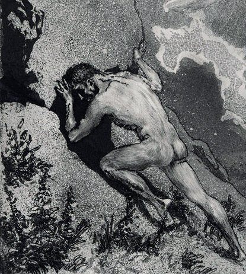

Xưa có nhà vua Sisyphe, con của thần Gió-Éole và nữ thần Énarété, nổi danh là một con người mưu mẹo và xảo quyệt. Sisyphe đã dựng nên đô thành Éphyre mà sau này gọi là Corinthe, đã tạo lập nên cho mình một cơ đồ mà khó có một nhà vua nào có được. Người ta thường đồn đại về các kho vàng bạc châu báu của nhà vua ở nơi này, nơi khác nhiều đến mức tính không xuể. Người ta cũng thường bàn luận đến cái tài làm giàu của Sisyphe với một thái độ chê cười và khinh bỉ, coi đó là sự táng tận lương tâm, sự thông minh một cách độc ác, bất nhân bất nghĩa. Thật đúng như một câu tục ngữ của chúng ta: Có độc mới đủ, có phủ như chó mới giàu. Sisyphe xấu xa như thế, nhiều tham vọng bẩn thỉu như thế nhưng lại luôn luôn tỏ ra là một người đạo cao, đức trọng, coi thường tiền bạc. Ông ta hay truyền giảng về đạo đức, bàn luận về lẽ sống, đạo lý làm người. Tất nhiên không tránh khỏi có một số người bị mắc lừa, lầm tưởng. Nhưng còn với số đông người thì ông ta chỉ là một kẻ đạo đức giả. Nhưng cuộc đời còn có công lý. Lẽ nào những kẻ như Sisyphe lại cứ sống nhơn nhởn ra mà không bị trừng phạt? Đúng là như vậy. Cuộc đời còn có công lý. Và chính thần Zeus là người phải điều hành công lý cho xứng đáng là bậc phụ vương của các thần và những người trần thế. Zeus không thể chịu đựng được cái tên vua vô lại giàu đến nứt đố đổ vách ra mà lại đóng vai một kẻ truyền giảng đạo lý. Và vị thần tối uy, tối linh, toàn năng toàn quyền này bữa kia nổi trận lôi đình. Thần thét vang gọi thần Chết-Thanatos đến và ra lệnh phải tóm cổ Sisyphe lôi tuột xuống âm phủ cho sạch sẽ thế gian.
Thần Chết-Thanatos lên trần với sứ mạng bắt Sisyphe về vương quốc của thần Hadès. Không rõ bằng cách nào Sisyphe biết được vụ công cán này của Thanatos. Và Sisyphe lập mưu bắt sống Thanatos. Truyện xưa không kể lại rõ Sisyphe dùng mưu gì, chỉ biết Thanatos chưa kịp thi hành phận sự thì đã bị Sisyphe trói gô cổ lại. Và thế là Thanatos bị Sisyphe bắt làm tù binh, chân cùm, tay xích, cổ gông, đêm cũng như ngày bị giám sát nghiêm ngặt.
Việc thần Chết-Thanatos bị bắt khiến cho trật tự trong thế giới của thần Zeus cai quản bị đảo lộn. Không có ai là người nên dương gian bắt đi các linh hồn xuống âm phủ. Vì lẽ đó trong một thời gian khá dài những người trần đoản mệnh chúng ta chẳng có ai bị chết cả. Không có người chết thì thế giới của thần Hadès trở nên vô ích, chẳng có việc gì để làm cả, từ lão chở đò Charon cho đến chó ngao Cerbère, rồi các quan tòa... Nhưng tai hại hơn nữa là không có người chết thì không có cúng lễ, hiến tế. Lễ tang cũng chẳng có mà lễ gọi hồn cũng không, do đó các vị thần bất tử từ thần Zeus trên thiên đình cho đến thần Hadès dưới âm phủ không được hưởng chút bổng lộc, lễ vật nào cả. Thậm chí có vị thần bị đói vì trong khi đi công cán dưới trần không tìm được nơi nào cúng lễ để hưởng chiêu đãi. Tình hình này quả là không thể chấp nhận được. Rối loạn hết cả. Thần Zeus sau khi nghe các chư thần tường trình, liền ra lệnh:
- Hỡi Arès, đứa con trai hung hăng, ngỗ ngược của ta! Mau xuống trần giải thoát ngay cho Thanatos đang bị tên vua Sisyphe cầm tù! Ta nhắc lại phải giải thoát ngay cho Thanatos, không được chậm trễ.
Arès hét lên một tiếng kinh động trời đất rồi bay vụt xuống trần. Chỗ này không cần kể dài dòng mọi người cũng đoán biết được tình hình diễn biến thế nào. Bởi vì khi Zeus đã đích thân ra lệnh, phái thần Chiến tranh-Arès đi thì dù Sisyphe có binh hùng tướng mạnh đến đâu cũng phải khuất phục. Arès giải thoát cho Thanatos, và Thanatos không quên thực thi cái sứ mạng mà thần Zeus đã giao cho là tước đoạt luôn linh hồn của Sisyphe đem về vương quốc của thần Hadès. Mọi việc tưởng như thế là xong, ấy thế mà vẫn chưa xong.
Ở dưới âm phủ, thần Hadès và nữ thần Perséphone sau nhiều ngày bị đói vì không có lễ vật hiến tế từ các đám tang, nay hết sức trông chờ vào lễ vật của đám tang Sisyphe để được “xả cảng” một bữa. Nhưng chờ mãi đến mòn cả mắt, đói thắt cả ruột mà vẫn không thấy gì. Thì ra Sisyphe đã dặn vợ đừng đem thi hài mình đi chôn, đừng làm lễ tang, cúng bái, hiến tế gì hết. Thấy các vị thần trông chờ lễ hiến tế khá nhiệt thành, lúc này Sisyphe mới tiến đến trước ngai vàng của thần Hadès giập đầu lạy tạ:
- Muôn tâu thần vương Hadès chí tôn chí kính, người cai quản thế giới của những bóng hình vật vờ, u ám có sức mạnh và uy quyền sánh ngang thần Zeus, đấng phụ vương! Xin Người hãy tha tội cho linh hồn kẻ hèn mọn này đã không biết dạy bảo vợ con những lễ nghi đối với các bậc thần linh khi chồng nó chết. Xin Người hãy tha tội cho con bởi vì con biết đâu con chết sớm quá thế này! Xin Người hãy cho phép con trở lại dương thế ít ngày để con dạy bảo vợ con làm lễ hiến tế các bậc thần linh như Zeus đã ban dạy cho loài người. Xong việc con xin lại xuống vương quốc này và sống trọn đời làm tôi tớ cho thần vương.
Hadès và Perséphone nghe những lời nói của Sisyphe thấy vừa bùi tai vừa có lý. Hai vợ chồng cho phép Sisyphe trở lại dương gian. Linh hồn Sisyphe trở về nhập vào hình hài và tiếp tục cuộc sống của một con người bình thường, khỏe mạnh, tinh ranh, và tất nhiên là con người này không hề nghĩ đến những lời mình đã hứa với Hadès và Perséphone. Ở dưới âm phủ hai vợ chồng Hadès, Perséphone chờ mãi, chờ mãi, mà không thấy lễ hiến tế, cũng chẳng thấy Sisyphe. Đến lúc này họ mới biết rằng họ bị Sisyphe đánh lừa. Thần Hadès vô cùng tức giận ra lệnh đòi ngay Thanatos đến và ra lệnh phải bắt ngay linh hồn Sisyphe về chầu. Thanatos không hề chậm trễ, bay lên trần ngay. Đến cung điện của Sisyphe thì gã thấy vị vua này đang mở tiệc ăn mừng. Đứng ngoài cửa, Thanatos nghe rõ tiếng Sisyphe nói với một vẻ kiêu căng đến quá ư là khó chịu:
- Nào xin mời các quý khách! Xin các ngài hãy uống mừng cho Sisyphe này đã lập được một chiến công hiển hách chưa từng có. Thử hỏi các anh hùng dũng sĩ đã có ai là người chết rồi, xuống vương quốc của thần Hadès rồi mà lại trở về được chưa? Nếu không có các vị thần giúp đỡ thì chưa từng một người trần thế nào mà lại xuống được thế giới âm phủ rồi lại trở về. Còn ta, ta đã bị thần Chết-Thanatos bắt đi, thế nhưng ta lại trở về được với dương thế! Chỉ có độc nhất Sisyphe này lập được một kỳ tích như vậy... Nào, uống đi các vị, cạn chén đi các vị, uống mừng cho Sisyphe này!
Nghe những lời nói đó, Thanatos tức điên cả ruột liền đạp cửa xông vào bàn tiệc bắt ngay linh hồn của Sisyphe. Thế là chấm hết cuộc đời của tên vua xảo quyệt, lừa dối cả thánh thần. Chẳng ai thương tiếc Sisyphe cả, từ thần linh cho đến những người trần đều nghĩ: “Thật đáng đời cái tên vua đảo điên, lừa lọc!” Trước tòa án công lý của thế giới âm phủ do thần Hadès chủ tọa, Sisyphe bị kết án khổ sai cực hình. Ông ta ngày ngày phải vần, lăn một tảng đá cực lớn, từ dưới đất lên một ngọn núi cao dốc đứng. Không thể nào nói hết nỗi cực nhọc khốn khổ của công việc đó đến như thế nào. Mệt tưởng đứt hơi, khát đến cháy cổ, mồ hôi đổ ra như tắm, nhưng nào có hoàn thành được công việc, Sisyphe cứ vần, cứ lăn tảng đá đến gần tới đỉnh núi thì nó lại bật ra khỏi tay lao xuống dốc. Thế là bao nhiêu mồ hôi, công sức mất hết. Sisyphe lại phải bắt tay làm lại từ đầu, xuống chân núi lăn, vần tảng đá lên. Ngày này qua ngày khác, Sisyphe cứ phải làm cái công việc khổ sai cực hình như thế, một công việc vô nghĩa và không có kết quả, để thấm thía với tội lỗi mà ông ta đã phạm phải trong những ngày sống trên dương thế.
Ngày nay, trong văn học thế giới có thành ngữ Tảng đá của Sisyphe (Le rocher de Sisyphe), Công việc của Sisyphe (Le travail de Sisyphe), Nỗi vất vả của Sisyphe (Le labeur de Sisyphe) để chỉ một công việc nặng nhọc vất vả tái diễn trong đời sống hoặc chỉ một công việc nặng nhọc, vất vả mà không biết đến bao giờ chấm dứt, không biết kết quả ra sao, một công việc lặp đi lặp lại đến chán ngấy, bị coi như một cực hình.172

Quanh chuyện tội trạng của Sisyphe, người xưa còn kể thêm nhiều tội khác nhau: nào là Sisyphe là một tên vua tham tàn và đạo đức giả đã kéo quân đến tàn phá vùng đồng bằng Attique, cuối cùng bị người anh hùng Thésée trừng phạt; nào là Sisyphe can tội tiết lộ ý đồ của các vị thần hoặc mách bảo cho thần Sông-Asopos biết chính thần Zeus là người đã bắt cóc Égine con gái của thần; nào là Sisyphe can tội truyền bá cho những người trần thế biết những điều bí ẩn của thế giới thần thánh...
[171] Néron (37-68) cầm quyền từ 54-68 là một bạo chúa đã giết anh, giết mẹ, giết vợ, đốt kinh thành Rome, khủng bố tín đồ Thiên Chúa giáo.
[172] Huyền thoại Sisyphe được triết học hiện sinh sử dụng như một bằng chứng, một biểu tượng tiêu biểu để thể hiện hoặc phản ánh những quan điểm của mình: phi lý và chấp nhận, vô nghĩa và nổi loạn.... Le mythe de Sisyphe là một tiểu luận của nhà văn hiện sinh chủ nghĩa Pháp Albert Camus (1913-1960).